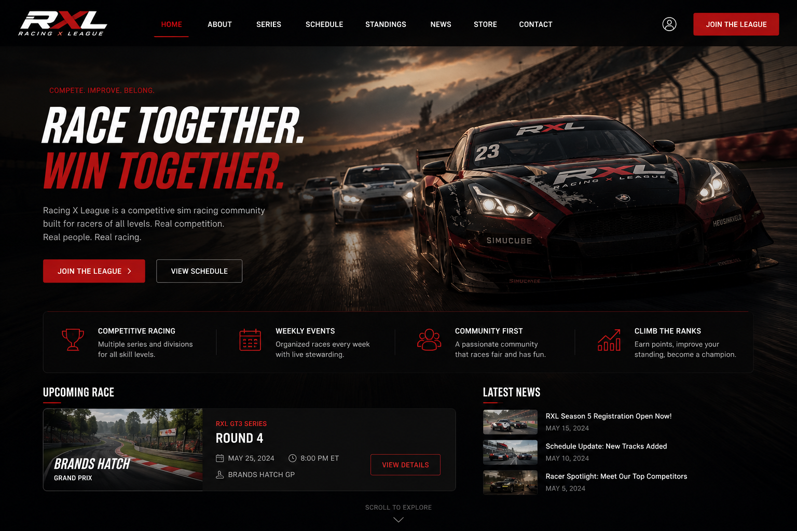

A typical day at Janus Web begins at 9:00 AM with a team stand-up meeting, where developers review project progress, discuss priorities, and plan tasks for the day. The morning is usually spent working on client websites and web applications, developing new features, fixing bugs, and ensuring everything runs smoothly. After lunch, developers often collaborate with designers, cybersecurity consultants, and project managers to review requirements and test completed work. The afternoon is focused on refining projects, responding to client feedback, and carrying out quality assurance checks. Before finishing for the day, developers update project documentation, track their progress, and prepare tasks for the following day, helping ensure projects stay on schedule and meet Janus Web's high standards for quality and security.
Janus Web recently completed the design and development of a modern racing league website, built to showcase the excitement and professionalism of competitive motorsport. The project features a striking homepage with immersive visuals, event schedules, league standings, news updates, and clear calls to action for drivers looking to join the competition. Our team focused on creating a fast, responsive, and user-friendly experience that captures the intensity of racing while making it easy for visitors to access information, follow championships, and engage with the league community across all devices.
